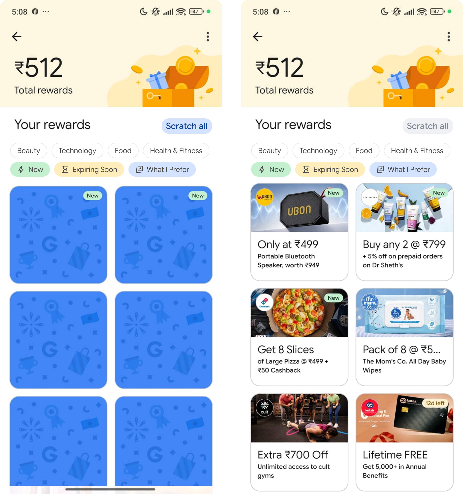

FEATURE #1 · Batch reveal
Scratch All
Turn four separate reward reveals into one intentional action.
The problem
When several reward cards are waiting to be revealed, opening them one by one adds unnecessary repetition. The interaction makes a simple “show me what I got” task feel longer than it needs to be.
The solution
Add a Scratch All action that reveals the available cards together, while preserving the individual cards for users who want the reveal to remain playful and deliberate.
Concept impact
1batch action
4cards in one reveal
↓repetitive effort
